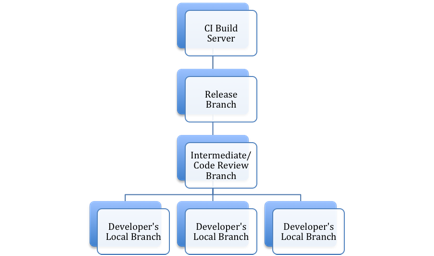

When we switched from Subversion to Git for our source code management, one of the tools we adopted was Gerrit. Gerrit is a web based code review system for Git.
Learn more about Gerrit here.
Here are some learnings that have evolved out of Gerrit's usage. The post is based on the following branching model.

Branching Model for Merges and Build
- Use Local Branches for Each Feature or Issue you are working on. This helps in clean merges. E.g. say you fixed two issues on a single local branch and pushed them for review. If the reviewer finds one issue fix good to go, but notices a problem with the other fix, both the fixes now get stuck because the code cannot be merged. The best way possible is to clone the master, then switch/ create a local for the branch you need.
- Before Pushing, ensure you have done a Pull, and resolved any eventual conflicts. This is a good practice in general with any version control system though, and not exclusive to Git/Gerrit model.
- For new files, remember to Add them to Git. This ensures if you have only versioned files being committed, Git will remember to pick this file up when committing.
- How to re-baseline if I come back from vacation? Or, have not taken an update in the last few days? For a scenario where you (as a developer) are too far away from the main branch, I recommend Stashing your current changes, then doing a Pull from main Repository, and then Popping out your local changes you stashed before the pull. You will get a clean listing of conflicts, if any, that can now be resolved.
- How to share un-approved work? E.g. say a developer takes a leave, has done some piece of code that is functionally a significant chunk, but he/she didn’t feel would meet your quality test (PMD/CheckStyle/Findbugs/Sonar, or others), you can still use that piece of code.
Have the developer commit that change to the review branch. Then download that patch from Gerrit and apply it to a new local branch. Now you can continue to make that piece better till it is ready for review.
- I applied the patch, but it shows up as committed. I want to own the change and send it as a single change to my reviewer.
There are a few options to resolve this.
You can continue working till you are ready to commit, just ensure you do an amend commit, thus previous changes and your changes now get pushed as a single change to the reviewer.
Or, you can commit the new changes. Then combine the previous and this commit. And then push for review. To combine commit using TortoiseGit, Show Log, then select multiple revisions of interest, right-click and combine commit. Again, reviewer will see it as a single change in Gerrit with you as the owner.
Or, do a mixed reset to the version before the patch commit, and then you will have a unclean working tree where you can continue making changes. When using TortoiseGit, Show Log on branch, right click on the N – 1 revision, and do a mixed reset. Remember, doing a hard reset will result in all code before that revision being wiped out.
In summary, to avoid surprises, the trick with Gerrit is to always have only one change (implying single push to remote) going to remote from one clean local branch.